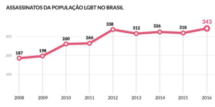

1. Quando buscamos compreender o que é cidadania e como é expressa pelo cidadão, devemos ter presente que ela é resultante de um aprendizado. Aprendemos a ser cidadãos. Porém, ao nascermos, a legislação nos garante cidadania, pois é papel da lei garantir a todos "um lugar" ao qual possamos identificar como nosso: a pátria, o lar, as garantias sociais etc. Para que a cidadania possa existir, ela inicialmente vem expressa legalmente e, depois, efetiva-se com a participação social, no cumprimento de deveres e na exigência de direitos.
Nesse contexto, avalie as seguintes asserções e a relação proposta entre elas.
Vivemos em uma sociedade na qual somos desafiados constantemente a nos adaptar ou alterar nossa realidade, pois, ao nascer, recebemos um contexto pronto, desenhado por terceiros. A cada dia, temos que aprender a conviver e a transformar este contexto, seja na luta pela por nossa sobrevivência, por estudo, por trabalho ou mesmo pelo direito à opinião.
PORQUE
A vivência da cidadania na vida política ou pública exige, de cada um de seus partícipes, cada vez mais transparência e correção das ações. É nesta sociedade que se vive a liberdade e que se arca com as consequências de seus atos.
1.1. Considere as seguintes afirmações baseadas na Declaração e Programa de Ação da Conferência Mundial dos Direitos Humanos (Viena, 1993).
I. Todos os direitos humanos são universais, indivisíveis, interdependentes e
inter-relacionados.
II. A comunidade internacional deve tratar os direitos humanos de forma
global, justa e equitativa, em pé de igualdade e com a mesma ênfase.
III. Embora particularidades nacionais devam ser levadas em consideração, é
dever dos Estados promover e proteger todos os direitos humanos e liberdades
fundamentais, sejam quais forem seus sistemas políticos, econômicos e
culturais.
IV. Todos os povos têm direito à autodeterminação. Em virtude desse direito,
determinam livremente sua condição política e promovem livremente o
desenvolvimento econômico, social e cultural, observadas as prescrições da
Declaração Universal dos Direitos Humanos.
SOMENTE estão corretas as afirmações:
2. Os termos ambiente ou meio ambiente sempre estiveram presentes no linguajar humano, mas, sem dúvida, os grandes avanços da industrialização e, como consequência negativa, a poluição, deram força ao discurso ambientalista e de pensadores éticos, preocupados com a vida na Terra e com a sua preservação.
Nesse contexto, avalie as seguintes asserções e a relação proposta entre elas.
O ser humano, devido à sua capacidade de adaptação e sobrevivência, ocupa praticamente todos os espaços do planeta Terra e pode-se dizer que, aos poucos, também desbrava o Universo.
PORQUE
A capacidade do ser humano de produzir ferramentas, poder fazer suas atividades, possibilitou essa adaptação aos mais incríveis espaços e realidades ambientais. Com isso, o ser humano consegue superar seus limites e suas dificuldades diante das hostilidades naturais. O desenvolvimento de ferramentas e máquinas cada vez mais poderosas e transformadoras provocaram mudanças significativas em sua vida.
A respeito dessas asserções, assinale a opção correta.
2.1. Através de estudos da apostila, entendemos que os conceitos de sustentabilidade são muito dinâmicos e abrangentes. Sustentabilidade é um tema que não pode ser visto por apenas uma vertente, uma visão e evolução da mudança na sociedade, com indivíduos interconectados, nossas ações por menores que sejam, afetam todos. Nesse sentido, vários estudos se propuseram a estudar e pesquisar a respeito deste tema de grande importância, contribuindo para o surgimento de vários conceitos a respeito de sustentabilidade, mas o mais conhecido é o denominado Triple Bottom Line, os três pilares da sustentabilidade: ambiental, social e econômico.
Elkington (2001) criou esse conceito baseado no entendimento de desenvolvimento sustentável divulgado na década de 1980 pela primeira ministra da Noruega Gro Brundtland, no relatório denominado "Nosso futuro comum" ou, em inglês, "Our Common Future".
A respeito dos três pilares de sustentabilidade, é correto afirmar que:
3. As palavras cidadania, cidadãos e cidades possuem uma mesma origem semântica. A palavra "cidadãos" tanto representa os habitantes de uma cidade, quanto os indivíduos que possuem direitos civis, políticos e sociais.
Para a pessoa ser cidadã e ter direito à cidadania e a viver plenamente sua vida, são necessários os direitos sociais. Todos os cidadãos têm o direito à liberdade, à propriedade e à igualdade perante a lei – o conjunto desses direitos forma a sociedade civil.
Para efetivar o pleno exercício do cidadão e do direito à cidadania, temos também os direitos sociais, que incluem o direito ao trabalho, ao salário, à saúde, à educação e à moradia. Todos os direitos dos cidadãos que formam a cidadania são baseados na justiça social. Aliás, além dos direitos, os cidadãos também devem seguir seus deveres perante a lei, perante a sociedade. Disponível em https://escolakids.uol.com.br/cidadania-cidadaos-e-cidades.htm. Acesso em 27/08/2019.
Considerando o contexto, avalie as seguintes asserções e a relação propostas entre elas.
I. Cidadão é todo aquele que vive na cidade ou na sociedade independente de sua condição. Ao ser gerado, ao nascer, tem e deve ter seu espaço social. Claro que atuar, agir, buscar aprofundar as relações sociais é o ideal de cidadania e deve ser buscado por todos. Mas ao mesmo tempo, não se podem descartar aqueles que não vivem essa situação.
PORQUE
II. A cidadania é uma eterna busca de reafirmação de interesses dentro de uma realidade ampla e, para que possa realmente ocorrer, é necessário que existam organizações fortes em seu meio, a fim de fazer com que as pessoas possam sentir-se amparadas e protegidas para terem seus direitos e suas necessidades atendidos.
A respeito dessas asserções, assinale a opção correta:
4. O respeito aos Direitos Humanos sempre foi um ponto de atenção na discussão sobre ética no Brasil, porém agora, com o avanço das pesquisas estatísticas, podemos constatar esse desrespeito com dados concretos. O Disque Direitos Humanos, que foi implementado pelo Governo Federal em 2015, mais conhecido como Disque 100, nos trouxe evidências desse cenário.
No primeiro semestre de 2015 foram registradas 66.518 denúncias, 63,2% são relacionadas a violações de direitos humanos de crianças e adolescentes (42.114); 24,2% de pessoas idosas (16.014); 7,3% de pessoas com deficiência (4.863); 0,8% de denúncias de violações cometidas contra a população LGBT (532); 0,5% de população em situação de rua (334); 2,6% de pessoas em restrição de liberdade (1.745); e 1,4% de denúncias de outras populações, tais como: quilombolas, indígenas, ciganos, violência contra comunicadores, conflitos agrários e fundiários, fundiários urbanos, intolerância religiosa, entre outros (916) (BRASIL, 2015, p. 11 apud Texto da aula 3, p. 10).
Com base nessa discussão, assinale a alternativa que destaca uma provável solução descrita pelo próprio texto da disciplina:
5. Segundo Srour (2013), as empresas estão sujeitas a muitas realidades originadas pela dinâmica do capitalismo e, consequentemente, às ações morais ou imorais de seus executivos. Surgindo assim os diversos modos de agir que coloca a empresa como o "centro do mundo" e, com isso, um contexto de cinismo passa a ser aceito por quem dele faz parte.
Considerando o texto abaixo:
Mineradora norueguesa tinha 'duto clandestino' para lançar rejeitos em nascentes amazônicas
Além de um vazamento de restos tóxicos de mineração, que contaminou diversas comunidades de Barcarena, no Pará, a gigante norueguesa Hydro usou uma "tubulação clandestina de lançamento de efluentes não tratados" em um conjunto de nascentes do rio Muripi, aponta um laudo divulgado pelo Instituto Evandro Chagas, do Ministério da Saúde. Após negar irregularidades, a Hydro admitiu, em nota, a existência do canal encontrado por pesquisadores. (...) após a confirmação do vazamento de uma barragem que continha soda cáustica e metais tóxicos (...) o mais grave de tudo, a empresa fez uma tubulação para jogar resíduos diretamente no ambiente". Segundo o Especialista "a população usa estas águas para recreação, consumo e captura de peixes". (...) Após ser informada sobre o laudo oficial, entretanto, a empresa norueguesa disse, em nota enviada à BBC Brasil, que "tem o compromisso de corrigir qualquer problema que possa ter sido causado pela sua operação".
(Fonte: https://www.bbc.com/portuguese/brasil/43162472 - 23/02/2018)
Avalie as seguintes asserções e a relação proposta entre elas:
I. As práticas empresariais adotadas pela empresa Hydro estão relacionadas ao que Srour (2013) entende por moral da parcialidade.
PORQUE
II. Essa moral é entendida como a da parcialidade, isto é, serve a uma parte da sociedade, não a todos, e não deve servir como regra de conduta, pois a sociedade tornar-se-ia um caos se todos agissem desse modo.
A respeito dessas asserções, assinale a opção correta:
6. Observe a imagem e a seguir analise as informações do texto:
Fonte: http://direitossociaisvocesabia.blogspot.com.br/2010/10/critica-aos-direitos-humanos.html
Defender os direitos humanos é defender uma igualdade entre as pessoas. Essa igualdade é uma característica das democracias modernas, pois foi a partir delas que se passou a admitir que uma democracia se fundamenta e se justifica quando os direitos subjetivos estão garantidos. Mas sem dúvida é no século XX que aprendemos realmente a instaurar democracias cidadãs e pautadas em direitos humanos. Isso se efetiva quando há uma participação para todos, forma só possível dentro de um sistema democrático, mas como também vimos isso foi se estabelecendo de modo gradual e, a partir do século passado, se intensificando. Isso quer dizer que toda pessoa que se vive sob uma forma de governo democrático deve ser participante desse governo. Ninguém pode ser excluído e nem mesmo alguns serem privilegiados em detrimento de outros.
Considerando as ideias da imagem e do texto acima, avalie as afirmações a seguir:
I. As vantagens do sistema democrático podem ser destacadas em muitos
aspectos, entre esses ainda se pode citar: a defesa de seus cidadãos, mas que
ainda foge do ideal que se tem a respeito de igualdade.
II. Mesmo tendo direitos, há ainda muitos marginalizados pela desigualdade
gritante da sociedade, mas isso não é problema do governo.
III. Sabemos que o texto da constituição é muito bonito, mas infelizmente a
sua aplicação ainda não atende a todos da sociedade.
IV. As pessoas até conhecem os seus direitos, mas infelizmente a realidade de
muitos, ainda está distante do que prevê na constituição.
É correto apenas o que se afirma em:
6.1. Por mais que tenhamos avançado na garantia do direito à vida, principalmente para minorias sociais, ainda temos problemas nesse sentido. Tomando o exemplo da população LGBT, a organização Grupo Gay da Bahia (GGB), analisando estatísticas da segurança pública, destacam o seguinte histórico de assassinatos:
A homofobia, apontada como a principal causadora desse fato, é um problema social que tem consequências graves, que vão desde o constrangimento e ao desrespeito às liberdades básicas da população LGBT, até a morte e perseguição sistemática, explicitada no gráfico acima.
Isto posto, analise o gráfico levando em consideração as questões que envolvem a cidadania e os Direitos Humanos para assinalar a alternativa que melhor sintetiza esses dados:
7. O espaço escolar não deve apenas preocupar-se com a formação intelectual do educando, mas também e principalmente, com a sua formação enquanto ser humano ético, participativo, realizado no campo pessoal e profissional. (...) Acredita-se que só quando as atitudes cidadãs passarem a ser uma constante no espaço escolar e principalmente, em sala de aula, por todos aqueles que fazem parte do dia a dia do fazer escolar, é que se terá uma geração de cidadãos participativos, envolvidos com o próprio bem estar, assim como de seus semelhantes. (OLIVEIRA; THOMAZ, 2009, p. 3).
Fonte: http://www.diaadiaeducacao.pr.gov.br/portals/pde/arquivos/1709-8.pdf
De acordo com as informações dos autores e estudos do material, descreva com suas palavras, que tipo de atitudes cidadãs podem ser discutidas no dia a dia nas escolas e exemplifique estas ações.
Resposta Correta:
Hoje em dia presenciamos muito a discussão sobre a formação dos alunos voltada para a cidadania, com um discurso que vai muito além das práticas da sala de aula, alguns desses comportamentos são úteis para combater a falta de respeito e ajudar no bom relacionamento com o colega de sala de aula. E São conceitos fundamentais para terem um bom relacionamento: ter respeito, sinceridade, cooperação, Diálogo, bondade, solidariedade, não agredir. Esses conceitos ajudarão no desenvolvimento de suas capacidades e responsabilidades, além do crescimento em suas relações interpessoais, pois perceberá que seus direitos serão garantidos a partir do cumprimento dos deveres dos outros e vice-versa.
7.1. Leia o provérbio a seguir:
"Dê um peixe a um homem faminto e você o alimentará por um dia. Ensine-o a pescar, e você o estará alimentando pelo resto da vida." – Provérbios Chineses
Sabemos que agir socialmente e nas organizações, antes de ser uma obrigação, é um direito que todos temos e podemos exercer, basta que estejamos dispostos a fazer o que deve ser feito e dedicarmos o que estiver ao nosso alcance para executar atividades necessárias à sociedade.
A partir do provérbio e da informação acima, descreva que tipo de ações podem ser feitas na sociedade que podem ajudar organizações a se manterem. Dê exemplo de alguma organização, Ong, que você tenha conhecimento e que funcionam.
Resposta Correta:
Conforme o provérbio acima, as pessoas devem buscar sempre mais conhecimentos em suas tarefas, e não querer tudo pronto, se aperfeiçoar a cada dia e saber executar-las de forma eficaz. Devemos ter força de vontade em aprender e não sempre esperar que tudo venha pronto, pois não é assim que funciona no mercado profissional hoje. Diante disso as organizações precisam nos fornecer todos os auxílios e instrumentos, e se atualizar conforme o mercado atual, para assim ter um trabalho em excelência diária.
Abaixo encontra-se as respostas das questões de múltipla escolha: